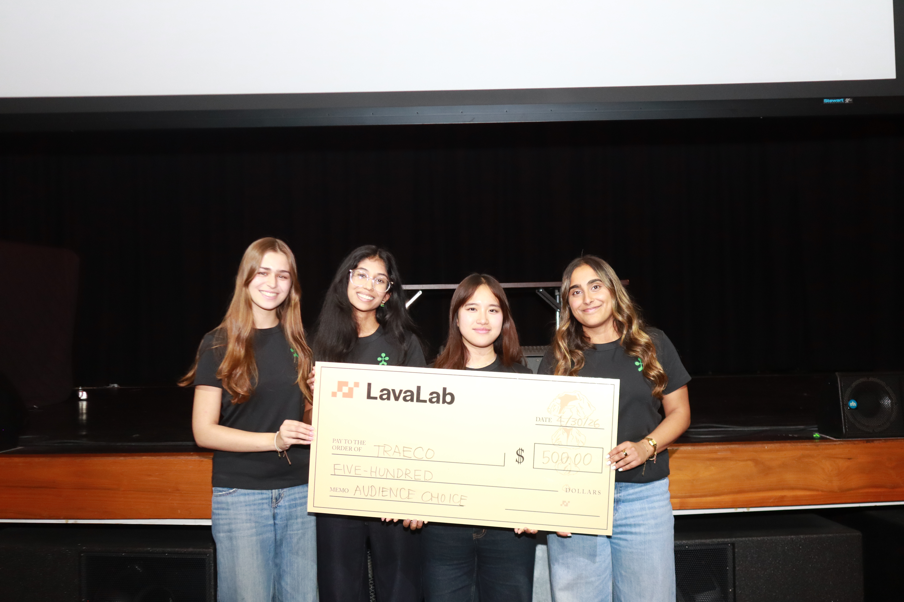
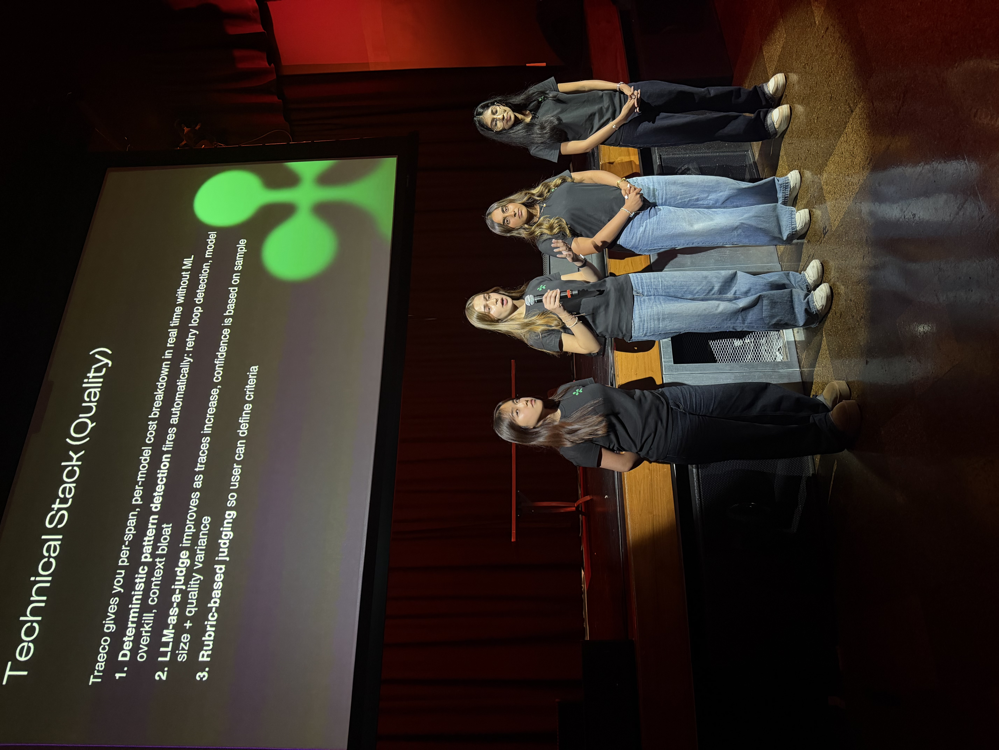

A quality-aware recommendation engine that helps teams cut AI agent costs without sacrificing output quality.
Teams deploying LLM agents have no reliable way to tell which model or prompt choice is wasting money versus actually necessary for quality — cost and quality live in separate dashboards, if they're tracked at all.
Co-built the core web app foundation with one other developer — the agent spend-breakdown dashboard and surrounding platform. On top of that, I specifically built:
traeco-sdk (PyPI) for instrumenting OpenAI and
Anthropic calls.

